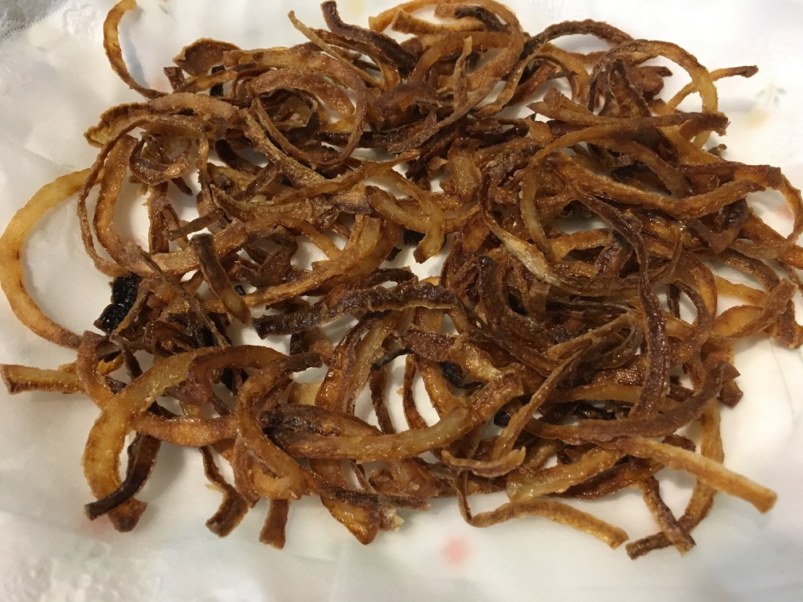

| Other | Meat | Veggie | Fruit |
|---|---|---|---|
| onion | |||
| shallot |
| instructions |
|---|
| Slice shallots or onions into slices |
| Let it sit for a couple hours in the sun to dry |
| Heat some oil on low |
| Mix the slices with some flour |
| Add the slices to the oil |
| Remove slices when it has a light golden color |
| Let the fried slices dry for a few hours in the sun |